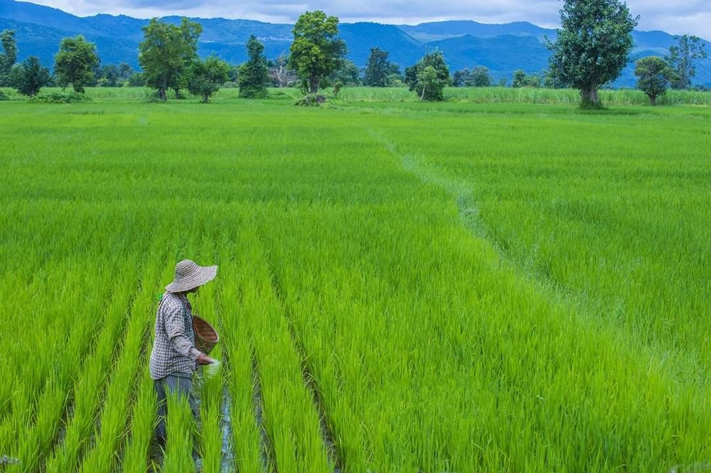

ປະຫວັດ ແລະ ຖີ່ນກໍາເນີດຂອງເຂົ້າ
ເຂົ້າເປັນພຶດທີິ່ເກົ່າແກ່ທີິ່ສຸດທີິ່ມະນຸດເຮົາຮູ້ຈັກ ແລະ ປູກເພື່ອເອົາຜົນຜະລິດເປັນອາຫານ ມາແຕ່ເຫີງ ນານບໍ່ຕໍ່ກວ່າ 5,000 ປີແລ້ວ. ເຂົ້າເປັນອາຫານທີື່ສໍາຄັນຂອງໂລກ
ໂດຍຈະເຫັນໄດ້ ຈາກພົນລະເມືອງຫຼ້າຍ ກວ່າເຄິ່ງໜຶິ່ງຂອງໂລກ ແມ່ນກິນເຂົ້າເປັນອາຫານປະຈໍາວັນ ໂດຍສະເພາະ ຊາວອາຊີ ແລະ ສໍາລັບປະເທດເຮົາຖ້າວ່າ ເຂົ້າເປັນອາຫານຫຼັກທີິ່ສໍາຄັນຕົ້ນຕໍ່ຂອງຄົນລາວ
ແລະ ຄົນລາວຮູ້ຈັກເຂົ້າມາແຕ່ສະໄໝບູຮານນະການ. ເຂົ້າເປັນພຶດທີິ່ຢູ່ໃນຕະກຸນຫຍ້າ (Gramineae) ເຊິື່ງລວມເອົາທັນຍາພຶດອິ່ນໆເຂົ້າໄວ້ນໍາ ອີກ ເຊັິ່ນ: ສາລີ, ເຂົ້າຝູ້າງ, ອ້ອຍ ແລະ ອິ່ນໆ ເຂົ້າມີຫຼາຍຮ້ອຍຫຼາຍພັນຊະນິດດ້ວຍກັນ.
ເວົ້າລວມແລ້ວເຂົ້າມີຖິ່ນກໍາເນີດມາແຕ່ພາກອາຊີຕາເວັນອອກສ່ຽງໃຕູ້ ເຊິື່ງມີປະເທດອິນເດຍ, ຈີນ ແລະ ປະເທດອິ່ນໆ ເນຶ່ອງຈາກບັນດາເຫດຜົນລຸ່ມນີື້:
- ພູມອາກາດ: ຂົງເຂດນີ້ເປັນເຂດອົບອຸ່ນຊຸ່ມເຢັນ ເໝາະແກ່ການເຕີບໃຫຍ່ຂະຫຍາຍຕົວຂອງເຂົ້າ
- ດ້ານພູມສາດ: ຢູ່ຕາມໂຄກຕາມບຶງໃນຂົງເຂດນີື້ຍັງຄັ້ນພົບຕົ້ນເຂົ້າປ່າທີິ່ມີລັກສະນະຄື ເຂົ້າທີິ່ເຮົາປູກ
- ດ້ານປະຫວັດສາດ: ບັນດາເອກະສານຕ່າງໆທາງປະຫວັດສາດ, ເອກະສານບູຮານ ວັດຖຸໃນເຂດ ນີື້ໄດ້ບັນທຶກຢ່າງຈະແຈ້ງກ່ຽວກັບຕົ້ນເຂົ້າ ແລະ ການດໍໍາລົງຊີວິດຂອງພົນລະເມືອງ ເຂດນີື້ແມ່ນຕິດພັນກັບເຂົ້າ.
- ດ້ານເນື້ອທີິ່: ສ່ວນຫຼາຍເນື້ອທີິ່ປູກເຂົ້າໃນໂລກແມ່ນໄດ້ຖືກເຕົ້າໂຮມຢູ່ທະວີບອາຊີ.
ສ່ວນນີ້ຄື້ຜູ້ພັດທະນາເວັບນີ້.
ຜູ້ພັດທະນາເວັບໄຊ:
ທ້າວ ພາກພູມ ວັນສີ
ວິທະຍາໄວ BCT
ຫ້ອງB 1/2 ປີ1